7 Mathematical Methods in Finance
7.1 Introduction
A derivative is a contract which promises to make a payment at a specified time in the future, the amount of which depends upon the behavior of some underlying asset (or market variable) up to and including the time of the payment. Examples:
Options on stocks: the underlying asset is the price of stock shares.
Futures contract on wheat: the underlying asset is the price of wheat.
Forward contract for selling US dollars: the underlying asset is the exchange rate EUR-USD.
Derivatives may depend on many other variables: interest rates, indexes, electricity price, etc. Other derivatives are credit derivatives, insurance derivatives, weather derivatives, etc…
Definition 7.1 We will work with European options. Remember some definitions on Options:
Call option (“call”): A call option gives the holder the right (but not the obligation) to buy the underlying asset by a certain date \(T\) for a certain price \(K\).
Put option (“put”): A put option gives the holder the right (but not the obligation) to sell the underlying asset by a certain date \(T\) for a certain price \(K\).
The price \(K\) in the contract is known as the exercise price or strike price.
The date \(T\) in the contract is known as the expiration date or maturity.
European options can be exercised only on the expiration date itself.
American options can be exercised at any time up to the expiration date.
Long position: investor that buys the option.
Short position: investor that sells the option (writer of the option).
Long position on a “call”: \(\mbox{Payoff}=\max\{S_T-K,0\}\).
Short position on a “call”: \(\mbox{Payoff}=-\max\{S_T-K,0\}=\min\{K-S_T,0\}\).
Long position on a “put”: \(\mbox{Payoff}=\max\{K-S_T,0\}\).
Short position on a “put”: \(\mbox{Payoff}=-\max\{K-S_T,0\}=\min\{S_T-K,0\}\).
Remark. Notation:
- \(t\) is the current time.
- \(S_t\) is the underlying share price at time \(t\).
- \(K\) is the strike or exercise price.
- \(T\) is the option expiry date.
- \(C_t\) is the price at time \(t\) of European call options.
- \(P_t\) is the price at time \(t\) of European put options.
- \(c_t\) is the price at time \(t\) of American call options.
- \(p_t\) is the price at time \(t\) of American put options.
- \(r\) is the risk-free rate of interest (assumed constant).
Remark. Terminology:
A call option is:
- in-the-money if \(S_t>K\).
- out-of-money if \(S_t<K\).
- at-the-money if \(S_t=K\).
A put option is:
- in-the-money if \(S_t<K\).
- out-of-money if \(S_t>K\).
- at-the-money if \(S_t=K\).
7.2 The binomial model
This section introduces the binomial tree model and uses it to compute arbitrage-free prices for European-style options.
Although the mathematical description of this model involves only simple algebra, it is a powerful tool to understand arbitrage pricing theory.
The main idea of the binomial model is to break the time to maturity of an option into periods.
Then, in each period, and given the underlying asset’s price at the beginning of the period, it assumes that the stock price will change to one of two possible values at the end of the period.
Thus, we can then determine the value of the option recursively by starting at the maturity date, evaluating the option’s value under each possibility for the final prices of the stock, and then moving backward through the (binomial) tree.
The binomial model is a model in discrete time and it leads to the celebrated Black-Scholes model (a continuous time model) as a limiting case.
Basic assumptions of the binomial model: (1) no trading costs or taxes; (2) no minimum or maximum units of trading; (3) stocks and bounds can only be traded at discrete times (\(t=1, 2, 3, \ldots\)); (4) the principle of no arbitrage holds.
7.2.1 One-period binomial model
We start with the one-period version of the model. The model assumes that we have two assets: a risk-free asset (e.g., a treasury bond, currency, …) and a stock. Here, we denote by \(B_t\) and \(S_t\) the bond and stock prices at time \(t\), respectively. Typically, time \(t = 0\) represents the present time, and \(t = 1\) denotes some future time.
Let us begin by describing the behavior of the stock prices. If at time \(t= 0\) the price is \(S_0\), then the stock price at time \(t = 1\), \(S_1\), is given by the following random variable
\[ S_1 = \left\{ \begin{matrix} u S_0\,, & \text{with probability } p_u \text{ (i.e., if the price goes up) } \\ d S_0\,, & \text{with probability } p_d \text{ (i.e., if the price goes down) } , \end{matrix}\right. \] where \(u>1\), \(d<1\), \(p_u\), and \(p_d\) are positive positive constants satisfying \(d<u\), and \(p_u+p_d =1\). Figure 7.1 shows the development of the price of a stock under the above specification.
Figure 7.1: Stock prices in a one-period binomial tree.
It is often convenient to write instead \[S_1 = S_0 Z,\] where \(Z\) is a random variable defined as \[ Z = \left\{ \begin{matrix} u \,, & \text{with probability } p_u \,,\\ d \,, & \text{with probability } p_d \,. \end{matrix}\right. \]
On the other hand, the bond price is deterministic and given by \[\begin{align*} & B_0 = 1 \,, \\ & B_1 = 1 + R \,, \end{align*}\] where R is the interest rate for the period.
Remark. We may consider a bond with a continuous interest rate, i.e., \[B_1=e^{R}, \quad R>0.\] Remember: \(e^x\approx 1+x\).
Portfolios and arbitrage
We will consider portfolios constituted of risky assets \(S\) and bonds \(B\). More specifically, we will denote by \(x\) the number of bonds we hold in our portfolio, \(y\) the number of stock units held, and let \(h = (x,y)\). Consider now a fixed portfolio \(h = (x, y)\). Then, the value of the portfolio at time \(t\), \(V_{t}^h\), is given by \[ V_{t}^h = x B_t + y S_t \,. \] Note that this portfolio has a deterministic value at \(t = 0\), \(V_{0}^h = x B_0 + y S_0\), and a stochastic value at \(t = 1\), \(V_{1}^h = x B_1 + y S_1=x B_1 + y S_0Z\), where \(Z\) is a r.v.
We now introduce one of the central concepts of the theory in this section: arbitrage. An arbitrage opportunity is a strategy where we can make a sure profit with no risk (“a free lunch”). Generally speaking, an arbitrage strategy can be created by:
Start at time zero with a portfolio that has a net value of zero (implying that we are long in some assets and short in others);
At some future time \(T\):
\[P("loss")=0 \quad \text{and} \quad P("positive ~ profit")>0.\].
- If an arbitrage opportunity exists, all the market participants would exploit it, and the market prices of the assets in the portfolio would quickly change to remove the arbitrage opportunity. Formally,
Definition 7.2 An arbitrage portfolio is a portfolio \(h\) with the properties \[\begin{align*} &V_{0}^h = 0 \,,\\ & V_{1}^h >0 \quad \text{with probability } 1 \,. \end{align*}\]
Here we will consider the Principle of No Arbitrage: arbitrage strategies do not exist. If there are no arbitrage than any two portfolios that give exactly the same payments must have the same price (“Law of One Price”).
Essentially an arbitrage portfolio is a deterministic money-making machine. Hence, we can interpret the existence of an arbitrage portfolio as a severe case of mispricing on the market. Therefore, it is natural to investigate when a given market model is arbitrage-free.
Example 7.1 Suppose a stock is listed on both the NYSE and NASDAQ stock exchanges and consider the following steps:
A trader observes that the current price of the stock on the NYSE is $10.10 and that on the NASDAQ it is $10.20.
They purchase 10,000 of the lower-priced shares (on the NYSE), costing $101,000 and simultaneously sell the same quantity of 10,000 higher-priced shares, costing $102,000.
They manage to pocket the difference (102,000-101,000 = $1000) as profit (assuming there is no commissions).
Effectively, arbitrage is risk-free profit. At the end of the two transactions (if executed successfully), the trader is not holding any stock position (so they are risk-free), yet they have made a profit!
It turns out that our binomial model above is free of arbitrage if and only if the following conditions hold:
\[d \leq 1 + R \leq u \,.\] Remark: or, in continuous time, \(d < e^R<u\).
Moreover, the above no arbitrage condition is equivalent to saying that \(1 + R\) is a convex combination of \(u\) and \(d\), i.e.,
\[1 + R = u q_u + d q_d \,,\]
where \(q_u, q_d \geq0\) and \(q_u + q_d = 1\). In particular, the weights \(q_u\) and \(q_d\) can be interpreted as probabilities for a “new probability measure \(Q\)” with the property \(Q(Z = u) = q_u\), \(Q(Z = d) = q_d\). Denoting the expectation w.r.t. this measure by \(\mathbb{E}^Q\), it is easy to see that \[ S_0 = \frac{1}{1+R} \mathbb{E}^Q[S_1] \,. \] \(Q\) is known as the “risk-neutral measure”. Furthermore, \(q_u\) and \(q_d\) are explicit and given by \[\begin{align*} & q_u = \frac{(1 +R) - d}{u - d} \,, \\ & q_d = \frac{u - (1 +R)}{u - d} \,. \end{align*}\] These are known as the risk-neutral probabilities and will play an essential role in option pricing.
The above motivates the concept of risk-neutral valuation: the price of an asset is the expectation at time 1, calculated using the risk-neutral probabilities, and then discounted using the risk-free rate of interest.
Exercise 7.1 Obtain \(q_u\) and \(q_d\).
Risk-neutral pricing
Definition 7.3 A contingent claim (eg: a financial derivative such as an option) is any random variable \(X\) of the form \(X = \Phi(S_1)\), where \(\Phi\) is some given real valued function known as the contract function. The interpretation is that the contract holder receives the stochastic amount \(X\) at time \(t = 1\).
Two important examples are the European call and put options. For an European call option with strike \(K\), we have that the \(X = \max(S_1 -K, 0)\), while for the European put option with same strike \(K\), the claim is \(X = \max(K -S_1, 0)\). In what follows, we will denote by \(\Phi(u)\) and \(\Phi(d)\), the evaluations \(\Phi(u S_0)\) and \(\Phi(d S_0)\), respectively.
Our main problem is now determining the “fair” price for a given contingent claim \(X\). We denote the price of \(X\) at time \(t\) by \(\Pi(t; X)\). For a one-period model one have \(\Pi(1; X)=X\), i.e. the contract holder receives the stochastic amount \(X\) at time \(t = 1\).
However, the hard part of the problem is determining \(\Pi(0;X)\). The way to solve this problem is to find a portfolio \(h\) such that \[ V_{1}^h = X \,. \] We call to \(h\) a hedging portfolio or a replicating portfolio (because it replicates the payoff at time 1 on the derivative without any risk). The price at \(t = 0\) of the claim \(X\) is given by \[ \Pi(0;X) = V_0^h \,. \] Let us now find the replicating portfolio \(h = (x, y)\) for a contingent claim \(X\) with contract function \(\Phi\). The value of the portfolio at time \(t=1\) is
\[\begin{align*} & V_1^h = X = \Phi(S_1) = \Phi(uS_0) = \Phi(u) \quad \text{if} \quad Z = u \,, \\ & V_1^h = X = \Phi(S_1) = \Phi(dS_0) = \Phi(d) \quad \text{if} \quad Z = d \,. \end{align*}\]Substituting the expression for the value of the portfolio, we obtain the following system of equations:
\[\begin{align*} & V_1^h = \Phi(u) \iff x B_1 + y u S_0 = \Phi(u) \iff x (1 +R) + y u S_0 = \Phi(u)\,, \\ & V_1^h = \Phi(d) \iff x B_1 + y d S_0 = \Phi(d) \iff x (1 +R) + y d S_0 = \Phi(d) \,. \end{align*}\]Solving for \(x\) and \(y\) in the above system gives \[\begin{align*} & x = \frac{1}{1 + R} \frac{u\Phi(d) - d \Phi(u)}{u- d}\,, \\ & y = \frac{1}{S_0} \frac{\Phi(u) - \Phi(d)}{u- d} \,. \end{align*}\]
Then, the price at \(t = 0\) of the claim \(X\), \(\Pi(0;X)\), can be written as
\[\begin{align*} \Pi(0;X) & = V_0^h \\ & = xB_0 + y S_0 \\ & = x + y S_0 \\ & = \frac{1}{1 + R} \left( \frac{(1+R) - d }{u- d}\Phi(u) + \frac{u - (1+R) }{u- d}\Phi(d) \right) \,. \end{align*}\]
Here, we recognize the risk-neutral probabilities \(q_u\) and \(q_d\), and we can rewrite the pricing formula above as
\[\begin{align*} \Pi(0;X) = \frac{1}{1 + R} \left( \Phi(u) q_u + \Phi(d) q_d \right) \,. \end{align*}\]Thus, the right-hand side can now be interpreted as an expected value under the risk-neutral probability measure \(Q\). More specifically, we have that \[\begin{align*} \Pi(0;X) = \frac{1}{1 + R} \mathbb{E}^Q[X]\,. \end{align*}\]
Example 7.2 Consider a stock currently with price \(S_0 = 50\). The Stock’s price is expected to increase to 60 or decrease to 40 during the next year. The risk-free interest rate is 5% compounded annually. Compute the current price of a 1-year European call option with a strike price of 55.
7.2.2 Multiperiod binomial model
We now extend the one-period binomial model to multiperiod. To do so, we now let the time index \(t\) run from \(t = 0\) to \(t = T\), where \(T\) is fixed. As previously, we have a bond with price \(B_t\) and a stock with price \(S_t\) at time \(t\). More specifically, the bond prices are deterministic and given by
\[\begin{align*} & B_0 = 1 \,, \\ & B_{n+1} = (1 + R) B_n \,, \quad n = 0, \dots, T-1 \end{align*}\]
On the other hand, if at time \(t= 0\) the price of the stock is \(S_0\), then the future stock prices are random and given by \[\begin{align*} S_{n+1} = Z_n S_n \,, \quad n = 0, \dots, T-1 \end{align*}\] where \(Z_{0}, . . . , Z_{T-1}\) are iid random variables, taking only the two values \(u\) and \(d\) with probabilities \[\begin{align*} \mathbb{P}(Z_n =u)=p_u \,, \quad \mathbb{P}(Z_n = d) = p_d \,. \end{align*}\] In other words, during each time step, the stock price either moves up to \(u\) times its initial value or moves down to \(d\) times its initial value. Figure 7.2 shows the behavior of the stock price for \(T = 2\).
Figure 7.2: Multiperiod binomial tree.
Note that the prices of the stock at time \(t\) can be written as \[S_t = u^{k}d^{t-k} S_0 \,, \quad k = 0,\dots,t\,,\] where \(k\) denotes the number of up-moves that have occurred. Thus, each node in the binomial tree can be represented by a pair \((t,k)\) with \(k = 0,\dots,t\).
Figure 7.3 shows the representation of the nodes of a binomial tree for \(T = 2\).
Figure 7.3: Nodes of a multiperiod binomial tree.
Recall that the main aim is to find the arbitrage-free price of a given contingent claim (a financial derivative, for instance). In particular, we will only work with contingent claims of the form \[X = \Phi (S_T) \,,\] that is, claims whose value only depends on the stock price at the final time \(T\), \(S_T\). This type of contingent claims is typically called simple. Note that the European Call and Put options are examples of simple claims.
As in the one-period model, the problem is solved by finding a portfolio \(h\) that replicates the final value of the contingent claim, that is, if \(V_t^h\) denotes the value of the portfolio at time \(t\), we require that (recall the definition of contingent claim) \[ V_T^h = X = \Phi(S_T)\,. \] Then, the price of the derivative \(\Pi(0;X)\) at time \(t = 0\) must be the price of the portfolio \(V_0^h\) to avoid arbitrage opportunities. More specifically, \[ \Pi(0;X) = V_0^h \,. \]
It turns out that to find the price of this portfolio (and hence of the claim), we only need to repeatedly and recursively apply the principles of the one-step binomial model. We illustrate this in a binomial model 2 periods, i.e., \(T = 2\). First, we need to introduce further notation. We denote by \(V_t(k)\) the value of the replicating portfolio of the claim at the node \((t,k)\). Next, we need to split the tree in Figure 7.3 into two (one-period) sub trees as shown in Figures 7.4 and 7.5.
Figure 7.4: One-period subtree (up).
Figure 7.5: One-period subtree (down).
Remark. Note that \(u^2S_0, udS_0\) and \(d^2S_0\) are the values of \(S_t\) and \(X=\Phi(S_t)\). Thus, one have \(X=\Phi(u^2S_0), X=\Phi(udS_0)\) and \(X=\Phi(d^2S_0)\) (confirm with Figures 7.4 and 7.5).
Then, we can apply the principles of the one-period binomial model to compute \(V_1(1)\) and \(V_1(0)\) as follows \[\begin{align*} & V_1(1) = \frac{1}{(1 +R)}(q_u \Phi(u^{2} S_0 ) + q_d \Phi(ud S_0 ) ) \,, \\ & V_1(0) = \frac{1}{(1 +R)}(q_u \Phi(u d S_0 ) + q_d \Phi(d^{2} S_0 ) ) \,, \end{align*}\] where \(q_u\) and \(q_d\) are the risk neutral probabilities given by \[\begin{align*} & q_u = \frac{(1 +R) - d}{u - d} \,, \\ & q_d = \frac{u - (1 +R)}{u - d} \,. \end{align*}\]
Thus, we now obtain the one-period binomial tree given in Figure 7.6.
Figure 7.6: One-period subtree.
Please notice that \(V_1(1)\) is computed using \(u^2S_0\) and \(udS_0\). Also, \(V_1(0)\) is computed using \(d^2S_0\) and \(udS_0\). So, it seems natural to compute \(V_0(0)\) using the information on \(V_1(0)\) and \(V_1(1)\). Finally, using this, we compute the initial price of the portfolio \(V_0(0)\) as
\[V_0(0) = \frac{1}{(1 +R)}(q_u V_{1}(1) + q_d V_{1}(0)).\]
Example 7.3 Consider a stock currently with price \(S_0 = 50\). The Stock’s price is expected to increase to 10% or decrease 8% during the next two six-month periods. The risk-free interest rate is 5% compounded annually. Compute the price of a 1-year European put option with a strike price of 55.
Solution. \(\,\)
S0 <- 50
u <- 1.1
d <- 0.92
K <- 55
# Risk-free rate for the period of six months = (1 + r/n)^p - 1, where: r =
# risk-free interest rate compounded annually n = compounding periods in a year
# (2 semesters = 1 year); n = 2 p = number of compounding periods the rate is
# required for (1 semester); p = 1
R <- (1 + 0.05/2)^1 - 1
R## [1] 0.025# Number of periods (2 semesters)
n <- 2
# Future stock prices: S_t=u^k.d^(t-k).S0
k <- 0:n
St <- u^k * d^(n - k) * S0
St## [1] 42.32 50.60 60.50## [1] 0.5833## [1] 0.4167# or
qd <- 1 - qu
# Value of the contingent claim at maturity: X = phi(S_T); T = 2 pmax: parallel
# maxima between two vectors Eg: X1=(2,5,7) and X2=(4,0,1).
# pmax(X1,X2)=(4,5,7).
phi <- pmax(K - St, 0)
phi## [1] 12.68 4.40 0.00# Note: phi[1] -> k=0 (k is the number of up-moves) phi[2] -> k=1 phi[3] -> k=2
# Price of the option
# V_1(0)
vu <- (qu * phi[3] + qd * phi[2])/(1 + R)
vu## [1] 1.789## [1] 7.659## [1] 4.131We now give the general binomial algorithm.
Proposition 7.1 Consider a claim \(X = \Phi(S_T)\). Then \(V_t(k)\) can be computed recursively as \[\begin{align*} & V_t(k) = \frac{1}{(1 +R)}(q_u V_{t + 1}(k+1) + q_d V_{t + 1}(k) ) \,, \\ & V_T(k) = \Phi(u^{k}d^{T-k} S_0 ) \,. \end{align*}\]
In other words, the binomial algorithm consists of the following steps:
- Generate the tree of stock prices.
- Calculate the value of the claim at each final node.
- Calculate the claim values sequentially at each preceding node.
To generate the tree of stock prices (step 1.), we can employ the following code:
build_tree <- function(S0, u, d, n) {
tree <- matrix(0, nrow = n + 1, ncol = n + 1)
for (t in 1:(n + 1)) {
k <- 0:(t - 1)
tree[t, 1:t] <- u^k * d^(t - 1 - k) * S0
}
tree
}If we consider the same input data as in Example 7.3, we obtain the following tree
## [,1] [,2] [,3]
## [1,] 50.00 0.0 0.0
## [2,] 46.00 55.0 0.0
## [3,] 42.32 50.6 60.5Figure 7.7: Tree for the Example 3.5.
With the above tree at hand, we can evaluate the claim at the final nodes (step 2.) by simply taking the last row of the matrix. For instance,
## [1] 12.68 4.40 0.00Finally, for the recursive computations (step 3.) we can use the following code:
value_bin_mod <- function(qu, R, tree, K) {
val_tree <- matrix(0, nrow = nrow(tree), ncol = ncol(tree))
val_tree[nrow(tree), ] <- pmax(K - tree[nrow(tree), ], 0) # European put
for (t in (nrow(tree) - 1):1) {
for (k in 1:t) {
val_tree[t, k] <- ((1 - qu) * val_tree[t + 1, k] + qu * val_tree[t +
1, k + 1])/(1 + R)
}
}
val_tree
}Applying the above code to our example we obtain:
## [,1] [,2] [,3]
## [1,] 4.131 0.000 0
## [2,] 7.659 1.789 0
## [3,] 12.680 4.400 0Note that the price at time \(t = 0\) is given by the entry [1, 1], that is,
## [1] 4.131Remark. The above code for performing the binomial algorithm was presented using a European put option as an example. However, it can be easily modified to price any other simple derivative.
It turns out that Proposition 7.1, implies the following risk-neutral valuation formula.
Proposition 7.2 The arbitrage-free price at \(t = 0\) of a claim \(X\) with maturity \(T\) is given by \[ \Pi(0;X) = \frac{1}{(1+R)^T} \sum_{k = 0}^{T}\left( \begin{matrix} T \\ k \end{matrix} \right) q^k_uq^{T-k}_d \Phi(S_0 u^k d^{T-k}) \,. \]
Thus, an alternative solution to Example 7.3 using the above result is the following:
## [1] 4.131Remark. Sometimes, instead of \(u\) and \(d\) a volatility of the stock \(\sigma\) is provided. This stock’s volatility is defined as the annualized standard deviation of the stock return. Luckily, given the volatility \(\sigma\), we can calculate \(u\) and \(d\) by using \[u=\exp(\sigma/ n) \quad \mbox{and} \quad d=\exp(-\sigma/ n) = 1 / u \,,\] where \(n\) is the number of intervals over one year. One can show that when \(n\) tends to infinity, the binomial model converges to the Black-Scholes model (to see ahead).
R packages for the binomial model
There are some R packages that have implementations for the binomial model. However, only important examples such as call and put options
are available. Thus, when dealing with less standard derivatives, the previous analysis is highly relevant. We will come back to more complex examples shortly, but first let us illustrate the use of the derivmkts package (go to RStudio and download package vignettes).
To compute prices of European (and American) call and put options we make use of the
function binomopt(). Let us solve Example 7.3 using this function. We need
to note the following about binomopt(): the risk-free rate (r) must be an annual
continuously compounded rate (\(r=r_{continuous}=log(1+R)\)). To price an European option we need to change the default
value of the argument american = TRUE to FALSE. By default, the function works with a
volatility, hence we need to use specifyupdn = TRUE to indicate that we will provide \(u\)
and \(d\) through the arguments up and dn. We describe the rest of the arguments needed in
the following code:
binomopt(
s = 50,
# Initial stock price
k = 55,
# Strike price
r = log(1 + 0.05),
# Continuously-compounded risk-free rate
tt = 1,
# Time to maturity
d = 0,
# Dividends, in our case, we do not work with dividends, hence 0.
nstep = 2,
# Number of periods
american = FALSE,
# To indicate European
putopt = TRUE,
# To indicate a Put option
specifyupdn = TRUE,
# Tells the function to use u and d
up = 1.1,
# Value of u
dn = 0.92
# Value of d
)## price
## 4.153Remark. The value 4.153 differs from 4.131 due to the use of a continuously-compounded risk-free rate.
Moreover, derivmkts contains the function binomplot() which plots the development of the
stock price and shows graphically the probability of being at each node (represented as the
area of the circle at that price). The following is the plot for our example:
binomplot(
s = 50, k = 55, r = log(1 + 0.05), tt = 1, d = 0, nstep = 2,
american = FALSE, putopt = TRUE, specifyupdn = TRUE, up = 1.1, dn = 0.92,
v = 0, # A value of the volatility must be provided, although not used
plotarrows = TRUE, # Plots arrows that connect the nodes of the tree
plotvalues = TRUE # Plots the values of the stock prices at each node
)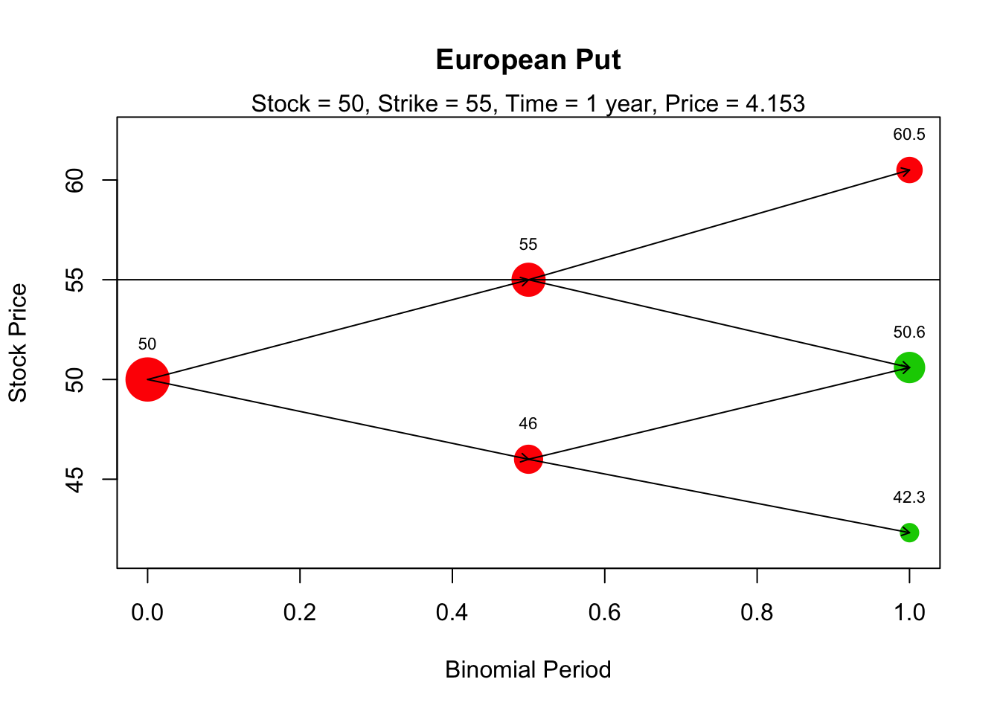
Note that a horizontal line with the strike value is included in the plot. This can also be
omitted by using drawstrike = FALSE. Finally, the green and red colors indicate whether or
not the option is optimally exercised there (green if yes, red if no).
We finish our discussion of the binomial model with the following more complicated example,
which cannot be solved directly with the functions in derivmkts. Hence the importance of
our early discussion.
Example 7.4 A stock price is currently 40. Over each of the next three 5-month periods, it is expected to go up by 10% or down by 5%. The risk-free interest rate is 6% per annum with continuous compounding. Apply Proposition 7.1 and a three-step binomial model to find the value of a European style derivative that pays off \(X = [\max(K - S_T, 0)]^3\), where \(S_T\) is the stock price in \(15\) months and \(K = 44\).
Solution. \(\,\)
## [,1] [,2] [,3] [,4]
## [1,] 40.00 0.00 0.00 0.00
## [2,] 38.00 44.00 0.00 0.00
## [3,] 36.10 41.80 48.40 0.00
## [4,] 34.29 39.71 45.98 53.24## [1] 9.705 4.290 0.000 0.000R <- exp(0.06 * 5/12) - 1
# Rcont=log(1+R) <=> R=exp(0.06)-1 (annually) => R=exp(0.06*5/12)-1 for a
# 5-month period.
R## [1] 0.02532## [1] 0.5021# We cannot use the original function value_bin_mod or package derivmkts!!
# X=phi(S_T) is now [max(K-S_T;0)]^3
value_bin_mod.new <- function(qu, R, tree, K) {
val_tree <- matrix(0, nrow = nrow(tree), ncol = ncol(tree))
val_tree[nrow(tree), ] <- (pmax(K - tree[nrow(tree), ], 0))^3 # given claim
for (t in (nrow(tree) - 1):1) {
for (k in 1:t) {
val_tree[t, k] <- ((1 - qu) * val_tree[t + 1, k] + qu * val_tree[t +
1, k + 1])/(1 + R)
}
}
val_tree
}
opt_price <- value_bin_mod.new(qu, R, tree, K)
opt_price## [,1] [,2] [,3] [,4]
## [1,] 132.0 0.00 0 0
## [2,] 253.1 18.62 0 0
## [3,] 482.5 38.34 0 0
## [4,] 914.1 78.95 0 0Thus, the price of the option is
## [1] 1327.3 The Black-Scholes model
The binomial model discussed in the previous section is a discrete-time model: the stock price changes at the end of each time period. Another commonly used model for option pricing is the Black-Scholes model, which assumes that the stock price moves continuously on time. The assumptions behind the Black-Scholes model are deep, and in fact, an entire course can be dedicated to the development of this model. In this course, it is sufficient for you to know how to price the options using simulations and the closed-form Black-Scholes formula. We start with a review of the Brownian motion, which will be used to describe the price movements of a stock.
7.3.1 Preliminars: Brownian motion
Definition 7.4 (Stochastic process) A stochastic process is a family of random variables \(\{X(t), ~t \in T\}\) defined on a probability space \((\Omega, \mathcal{F},P)\), where:
- \(t\) represents, typically, the time.
- \(T\) is the set where the time parameter \(t\) is defined.
- \(\Omega\) is the set of all possible outcomes.
- \(\mathcal{F}\) is a set of events.
- \(P\) is a probability function.
- \((\Omega, \mathcal{F},P)\) will become clear in ``Probability Theory and Stochastic Processes”.
If \(T=\mathbb{N}\), we say that the process is a discrite time process; if \(T=[a,~b] \subseteq \mathbb{R}\), we say it is a continuous time process.
Remark.
- \(\{X(t), ~t \in T\}=\{X(t,\omega), ~t \in T, ~ \omega \in \Omega\}\).
- \(X(t)=X_t\) is called the sate or position of the process at time \(t\).
- The space of the states, denoted by \(\mathcal{S}\), is the space where the random variables take values.
- If \(\mathcal{S}=\mathbb{R}\) the space is called continuous state space.
- If \(\mathcal{S}=\mathbb{N}\) the space is called discrete state space.
- For each fixed \(\omega \in \Omega\), the mapping \(t \to X(t,\omega)\) is called a realization, trajectory or sample path of the process.
Definition 7.5 (Standard Brownian motion) A standard Brownian motion (SBM), also known as standard Wiener process, is a stochastic process \(W = (W(t))_{t \geq0}\) satisfying:
- \(W(0) = 0\).
- The process has independent increments, i.e., for any \(0 \leq t_1 < t_2 < \cdots < t_n\), \[W(t_2) - W(t_{1}), \dots,W(t_n) - W(t_{n-1})\] are independent random variables.
- For \(s < t\), \(Y = W(t) - W(s) \sim N(\mu_Y = 0, \sigma^2_Y = t -s)\).
- \(W\) has continuous trajectories.
- \(Cov(W_t,W_s)=min(t,s).\)
Remark. With \(s=0\), it follows from 3. that \(W(t) \sim N(0,t)\). Notice that the variance is proportional to the time interval.
To generate trajectories of a SBM over a time period \([0, T]\), we consider a “small” time increment \(\delta t >0\). Then, consider the independent increments \[\begin{align*} & W(\delta t) - W(0) \,,\\ & W(2\delta t) - W(\delta t) \,,\\ & \ldots \,. \end{align*}\] Note that these increments are \(N(0, \delta t)\) distributed. Moreover, we can compute \(W(2\delta t)\) as \[ W(2\delta t) = (W(2\delta t) - W(\delta t)) + (W(\delta t) - W(0)) \,. \] Thus, we can repeat the same logic as above to simulate a whole process trajectory. The following code implements this idea:
set.seed(12345)
delta <- 0.001 # Time increment
t <- seq(0, 1, by = delta) # Time interval
# rnorm(n, mean = 0, sd = 1)
w <- rnorm(n = length(t) - 1, mean = 0, sd = sqrt(delta)) # iid normal distributed r.v.s
w <- c(0, cumsum(w)) # Cumulative sum; 0 is the initial value
plot(t, w, type = "l", xlab = "Time", ylab = "W(t)", main = "Simulated trajectory of a SBM",
)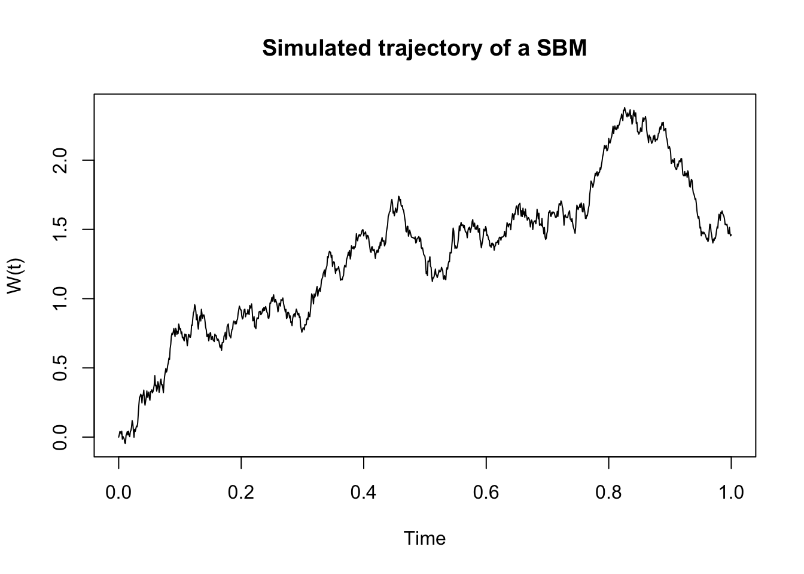
We now modify the code above to generate multiple trajectories:
nsim <- 100 # Number of simulated trajectories
w <- matrix(
rnorm(n = nsim*(length(t)-1), mean = 0, sd = sqrt(delta)),
nsim, # Each row is one simulated trajectory
length(t) - 1
)
w <- cbind(rep(0, nsim), t(apply(w, 1, cumsum))) # matrix with trajectories
plot(t, w[1, ], # Plots the first trajectory
type = "l",
ylim = c(-3.5, 3.5),
xlab = "Time",
ylab = "W(t)",
main = "Simulation of SBM"
)
apply(w[-1, ], 1, function(x, t) lines(t, x), t = t) # Plots the remaining trajectories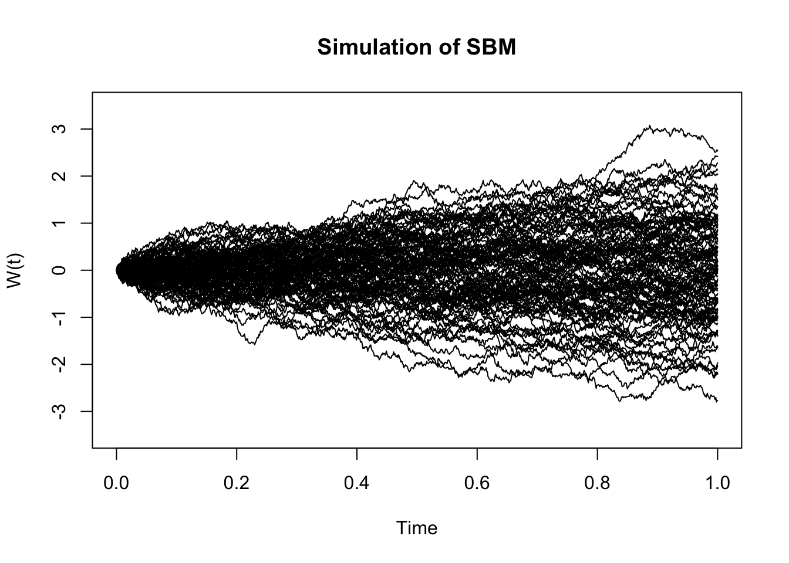
The standard Brownian motion can be generalized to the arithmetic Brownian motion, which scales and shifts the former. More specifically, \(X(t)\) is an arithmetic Brownian motion if \[X(t) = \mu t + \sigma W(t),\] where \(W(t)\) is a standard Brownian motion, \(\mu \in \mathbb{R}\) and \(\sigma \in \mathbb{R}^+\). Moreover, note that for \(s < t\), \[X(t)-X(s)\sim N(\mu (t - s), \sigma^2(t - s)).\] To simulate from a standard Brownian motion an easier way is to modify in our code above and generate independent \(N(\mu \delta t, \sigma^2\delta t)\) random variables. The following code implements the simulation:
- first we simulate data:
mu <- -1
sigma2 <- 0.5
nsim <- 100
x <- matrix(rnorm(n = nsim * (length(t) - 1), mean = mu * delta, sd = sqrt(delta *
sigma2)), nsim, length(t) - 1)
x <- cbind(rep(0, nsim), t(apply(x, 1, cumsum)))- secondly, we plot data:
plot(t, x[1, ],
type = "l",
ylim = c(-3, 2),
xlab = "Time",
ylab = "X(t)",
main = "Simulation of arithmetic Brownian motion"
)
apply(x[-1, ], 1, function(x, t) lines(t, x), t = t)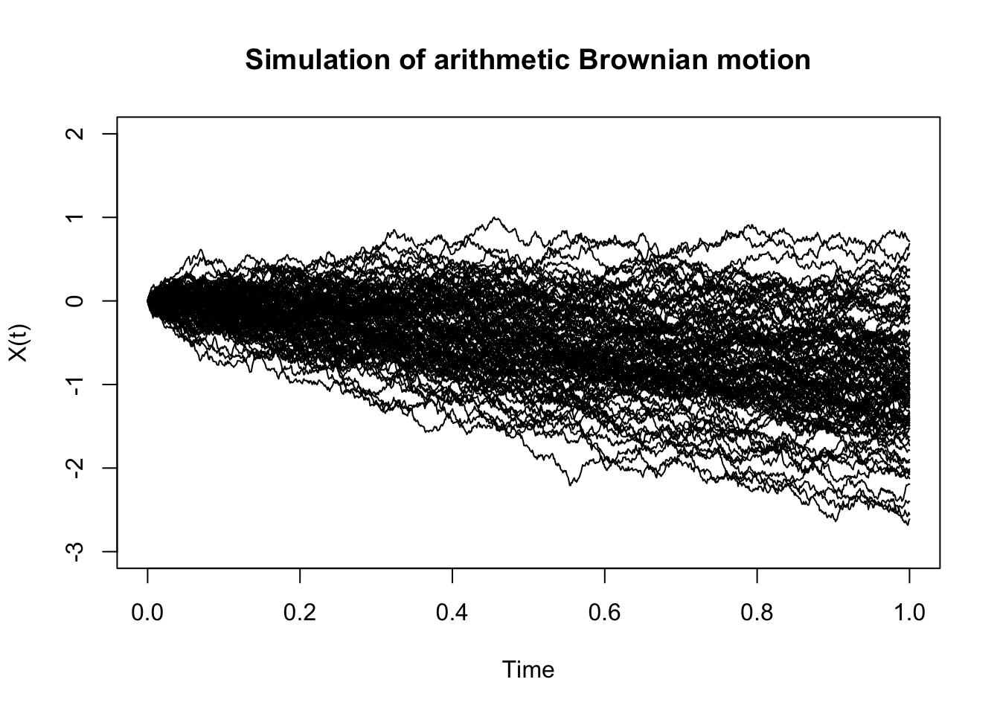
Experiment with different \(\mu\) and \(\sigma^2\) values:
mu <- 2
sigma2 <- 0.2
nsim <- 100
x <- matrix(
rnorm(n = nsim * (length(t) - 1), mean = mu * delta, sd = sqrt(delta * sigma2)),
nsim,
length(t) - 1
)
x <- cbind(rep(0, nsim), t(apply(x, 1, cumsum)))
plot(t, x[1, ],
type = "l",
ylim = c(-1, 3),
xlab = "Time",
ylab = "X(t)",
main = "Simulation of arithmetic Brownian motion"
)
apply(x[-1, ], 1, function(x, t) lines(t, x), t = t)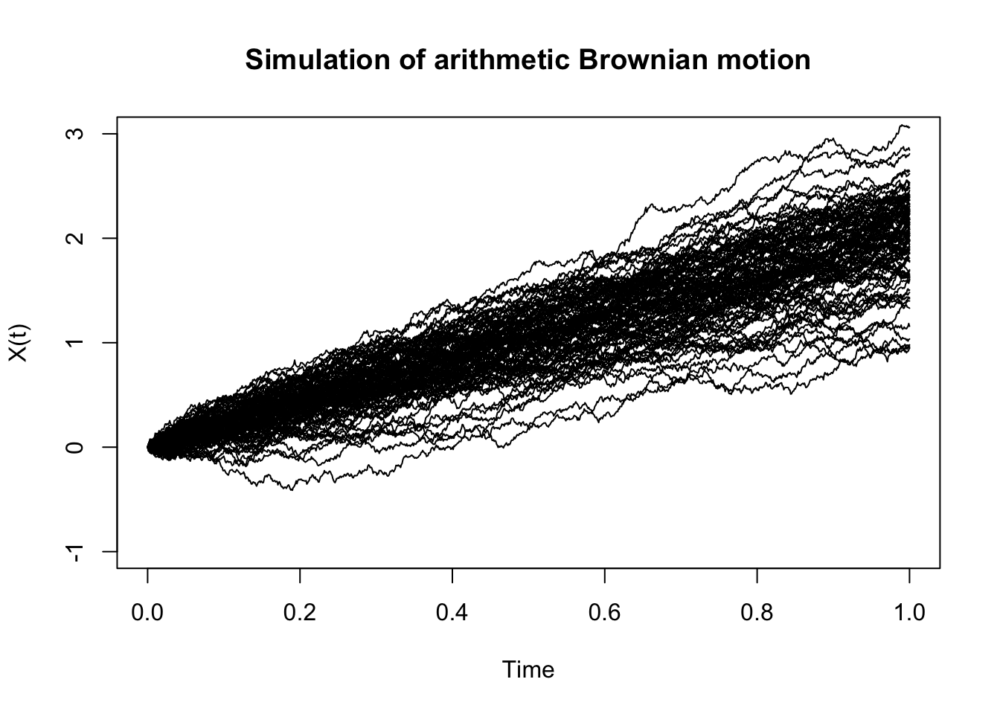
Note that the arithmetic Brownian motion can take negative values. Hence, using it for modeling stock prices is questionable. Instead, we now introduce the so-called called geometric Brownian motion, which can only take non-negative values. More precisely, a geometric Brownian motion, denoted by \(S(t)\), is a stochastic process of the form \[S(t) = S(0)\exp \left( X(t) \right) = S(0)\exp \left( \mu t + \sigma W(t) \right),\] where \(S(0)>0\) is some known starting value, and \(X(t)\) is an arithmetic Brownian motion. The following code generates some trajectories of this process using the previous implementation:
s0 <- 2
s <- s0 * exp(x)
plot(t, s[1, ],
type = "l",
ylim = c(0, 40),
xlab = "Time",
ylab = "S(t)",
main = "Simulation of geometric Brownian motion"
)
apply(s[-1, ], 1, function(x, t) lines(t, x), t = t)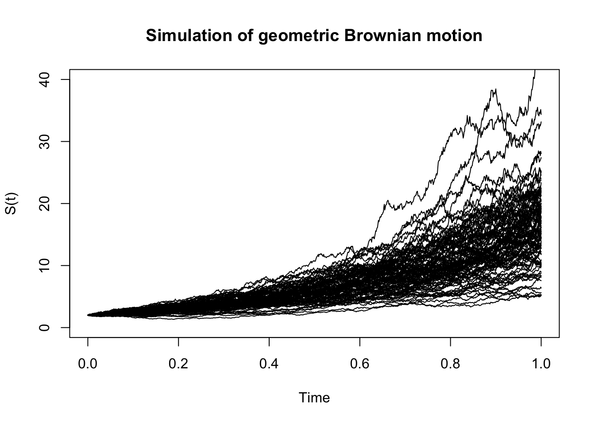
Note that in particular, \[\dfrac{S(t)}{S(0)}\sim LN(\mu t, \sigma^2 t),\] and more generally, for \(s < t\), \[\dfrac{S(t)}{S(s)}\sim LN(\mu (t - s), \sigma^2(t - s)).\] Remember: \(Y \sim LN(.,.) \iff \log(Y) \sim N(.,.).\)
Finally, one can show (to see next year!) that a geometric Brownian motion of the form
\[S(t) = S_0\exp \left( \left( \mu - \frac{\sigma^2}{2}\right) t + \sigma W(t) \right) \,,\] satisfies the stochastic differential equation (SDE) \[ dS(t) = \mu S(t) dt + \sigma S(t)dW(t), \quad S(0)=S_0 \,, \] known as the Black-Scholes model.
7.3.2 The Black-Scholes formula
As in the binomial model, the Black–Scholes model assumes that the prices of these two assets satisfy \[\begin{align} & dB(t) = r B(t) dt \,, \nonumber \\ & dS(t) = r S(t) dt + \sigma S(t) d\overline{W}(t), \quad S(0)=S_0 \,,\tag{7.1} \end{align}\] where
- \(B(t)\) represents the deterministic price of a riskless asset (a bond or a bank deposit);
- \(S(t)\) is the stochastic price process of a risky asset (a stock or an index);
- \(\overline{W}\) is a standard Brownian motion with respect to the original probability measure \(P\);
- \(r\) is the risk-free interest rate;
- \(\sigma\) represents the volatility of the risky asset, and
- \(S_0\) is the (known) initial condition.
The solution of (7.1) is the geometric Brownian motion:
\[S(t) = S_0\exp \left( \left( r - \frac{\sigma^2}{2}\right) t + \sigma \overline{W}(t) \right).\]
Now, we consider a contingent claim (a financial derivative) of the form \[X = \Phi(S(T)) \,.\] It can be shown that the arbitrage-free price \(\Pi(0;X)\) of \(X\) is given by the risk-neutral evaluation formula
\[\begin{equation} \Pi(0;X) = e^{- r T} \mathbb{E}^{Q}\left[ \Phi(S(T)) \right] \,, \tag{7.2} \end{equation}\]where the behavior of \(S\) under \(Q\) is described by the SDE \[ dS(t) = r S(t) dt + \sigma S(t)dW(t) \,, \] whose solution is the geometric Brownian motion and where \(W(t)\) denotes the Brownian motion under the measure \(Q\). In particular, we have that \(S(T)\) is explicit and given by
\[\begin{equation} S(T) = S_0\exp \left( \left( r - \frac{\sigma^2}{2}\right) T + \sigma W(T) \right). \tag{7.3} \end{equation}\]When considering a European call option, that is, \(\Phi(x) = \max(x - K, 0)\), (7.2) and (7.3) lead to the famous Black–Scholes formula as follows:
Proposition 7.3 (Black-Scholes formula) The price of an European call option \(C(0)\) with strike price \(K\) and time of maturity \(T\) is given by
\[\begin{equation} C(0) = S_0 N(d_1) - K e^{-rT}N(d_2) \,, \tag{7.4} \end{equation}\]where N is the cumulative distribution function for the \(N(0, 1)\) distribution and \[\begin{align*} & d_1 = \frac{1}{\sigma \sqrt{T}}\left( \log\left(\frac{S_0}{K}\right) + \left( r + \frac{1}{2} \sigma^2 \right) T \right) \,,\\ & d_2 = d_1 - \sigma \sqrt{T} \,. \end{align*}\]
Similarly, the price of a European put option \(P(0)\) with strike price \(K\) and time of maturity \(T\) is given by \[ P(0) = K e^{-rT}N(-d_2) - S(0) N(-d_1) \,, \] with \(d_1\) and \(d_2\) as above.
\(N(d_1)\) and \(N(d_2)\) are obtained in R as and .
Remark. Using Itô’s formula (next year, stochastic calculus), one can get an expression for the BS formula as a PDE (already seen in MMF – Part I).
In R, the Black–Scholes formula to price European call and put option is available in the
derivmkts package under the functions bscall() and bsput(), respectively. We illustrate
its use with an example.
Example 7.5 Consider a European call option over a stock with a current price S(0) = 50 and volatility 0.25. Moreover, the risk-free interest rate with continuous compounding is 6% per annum, the strike price is 45, and the option’s time to maturity is 6 months. Find the price of the option.
Solution. \(\,\)
# bscall(s, k, v, r, tt, d) s: Price of the underlying asset k: Strike price v:
# Volatility of the asset price, defined as the annualized standard deviation
# of the continuously-compounded return r: Annual continuously-compounded
# risk-free interest rate tt: Time to maturity in years d: Dividend yield,
# annualized, continuously-compounded
s <- 50
k <- 45
v <- 0.25
r <- 0.06
tt <- 6/12
d <- 0 # No dividends
bscall(s, k, v, r, tt, d)## [1] 7.3827.3.3 Greeks
Greeks represent sensitivities of a derivative value to changes in the underlying parameters used to determine its price. More specifically, if we denote by \(V\) be the price of a derivative, which depends on the underlying stock price \(S\), a risk-free rate \(r\), a volatility \(\sigma\) and with maturity \(T\), then the Greeks are defined as follows:
Definition 7.6 (Greeks) \(\,\)
Delta, \(\Delta\): Measures the rate of change of the option price with respect to changes in the underlying stock price. [similar to velocity]
\[\Delta=\frac{\partial V}{\partial S}\,.\]
Gamma, \(\Gamma\): Measures the rate of change in \(\Delta\) with respect to changes in the underlying stock price. [similar to acceleration]
\[\Gamma=\frac{\partial^2 V}{\partial S^2}=\frac{\partial \Delta}{\partial S}\,.\]
Vega, \(\nu\): Measures sensitivity with respect to changes in the volatility \(\sigma\).
\[\nu = \frac{\partial V}{\partial \sigma}\,.\]
Rho, \(\rho\): Measures sensitivity with respect to changes in the risk-free interest rate.
\[\rho=\frac{\partial V}{\partial r}\,.\]
Theta, \(\Theta\): Measures the sensitivity of the value of the derivative to the passage of time. [Theta is generally expressed as a negative number and can be thought of as the amount by which an option’s value declines every day.]
\[\Theta=-\frac{\partial V}{\partial T }\,.\]
Elasticity or Lambda, \(\lambda\): Is the percentage change in option value per percentage change in the underlying price (a measure of leverage).
\[\lambda=\frac{\partial V}{\partial S} \frac{S}{V}=\Delta \times \frac{S}{V}\,.\]
Psi, \(\psi\): Is the percentage change in option value per percentage change in the underlying dividend yield (\(q\)).
\[\psi =\frac {\partial V}{\partial q}\,.\]
In particular, for a European call option with strike price \(K\) and time of maturity \(T\) we have the following explicit expressions:
\[\begin{align*} &\Delta=N(d_1)\,, \\ &\Gamma=\frac{N^\prime(d_1)}{S\sigma \sqrt{T}}\,,\\ &\nu =S\sqrt{T}N^\prime(d_1) \,, \\ &\rho=KTe^{-rT}N(d_2)\,, \\ &\Theta=-\frac{S(0)N^\prime(d_1)\sigma}{2\sqrt{T}}-rKe^{-rT}N(d_2)\,. \end{align*}\]The derivmkts R package allows us to compute the Greeks for a financial derivative via the
function greeks(). For instance, the Greeks for the option in Example 7.5 can
be computed as follows:
## bscall
## Premium 7.38194
## Delta 0.80348
## Gamma 0.03134
## Vega 0.09794
## Rho 0.16396
## Theta -0.01210
## Psi -0.20087
## Elasticity 5.44217Furthermore, greeks() accepts vector inputs, which in particular allow us to visualize the
Greeks.
s <- seq(0.5, 80, by = 0.5)
call_greeks <- greeks(bscall(s, k, v, r, tt, d = 0))
for (i in rownames(call_greeks)) {
plot(s, call_greeks[i, ], main = paste(i), ylab = i, type = "l", col = "blue")
}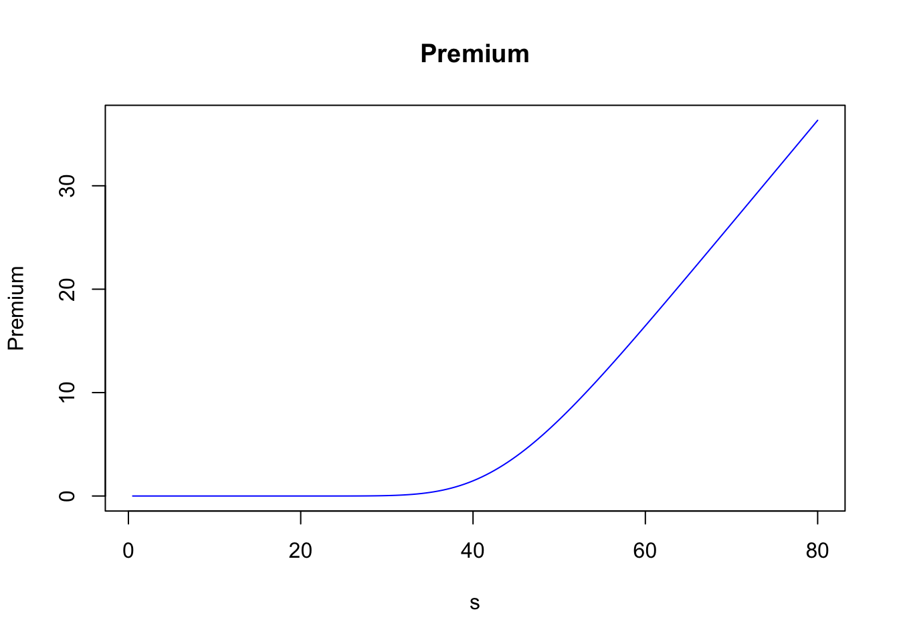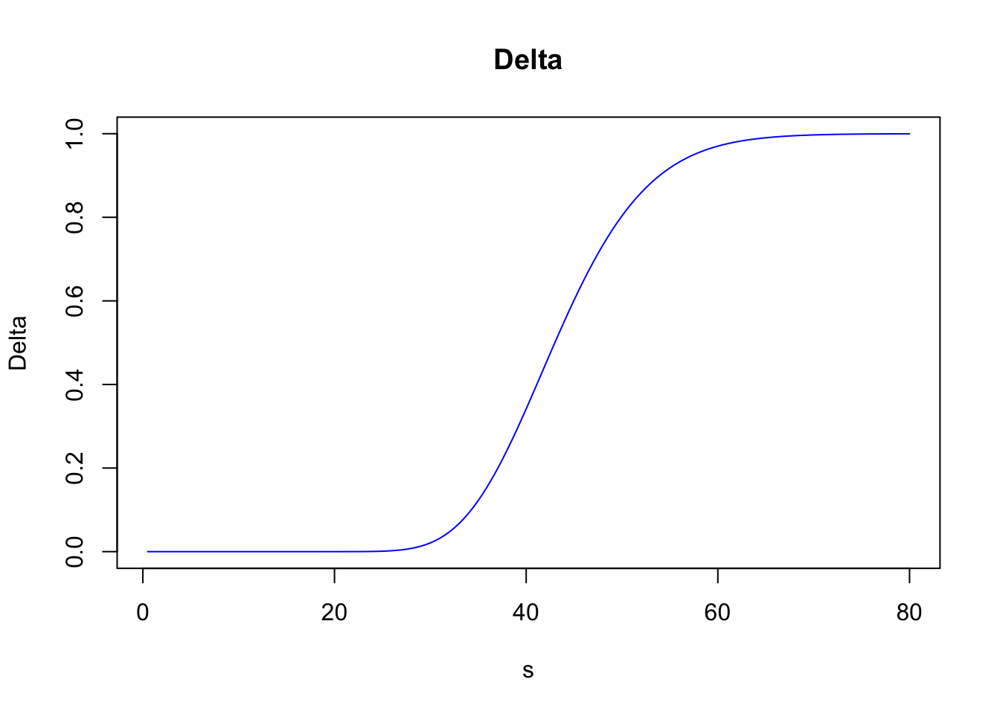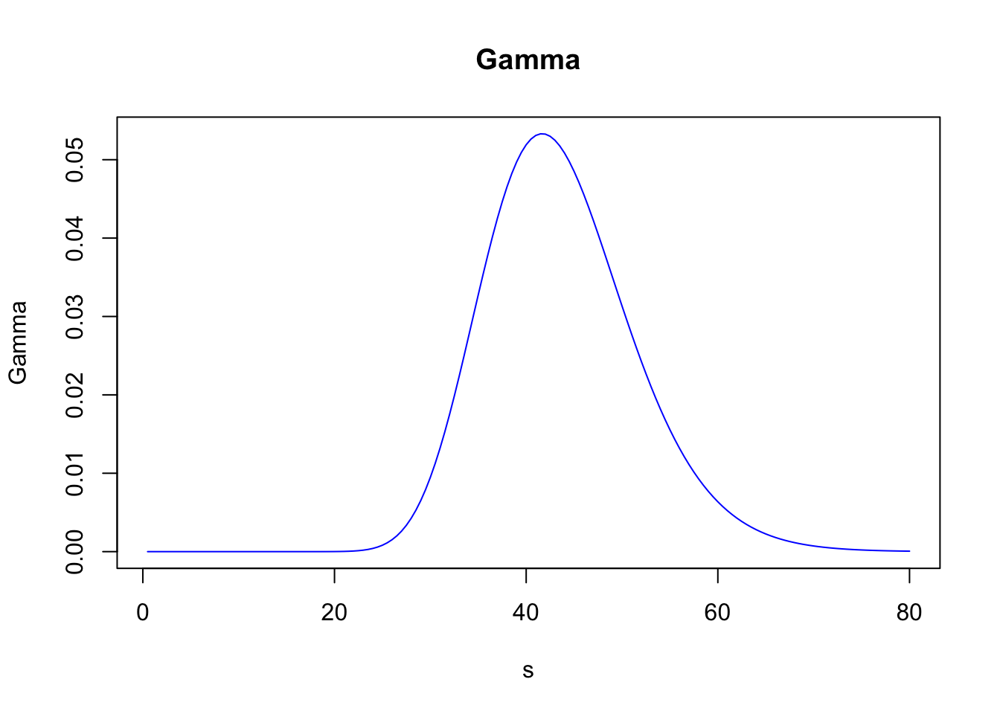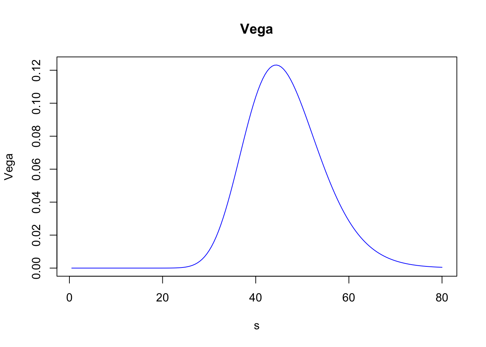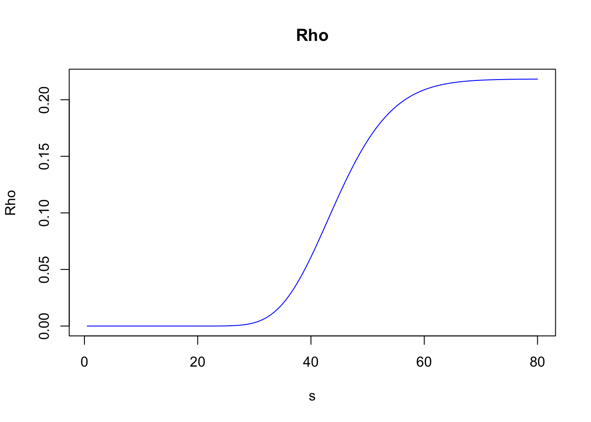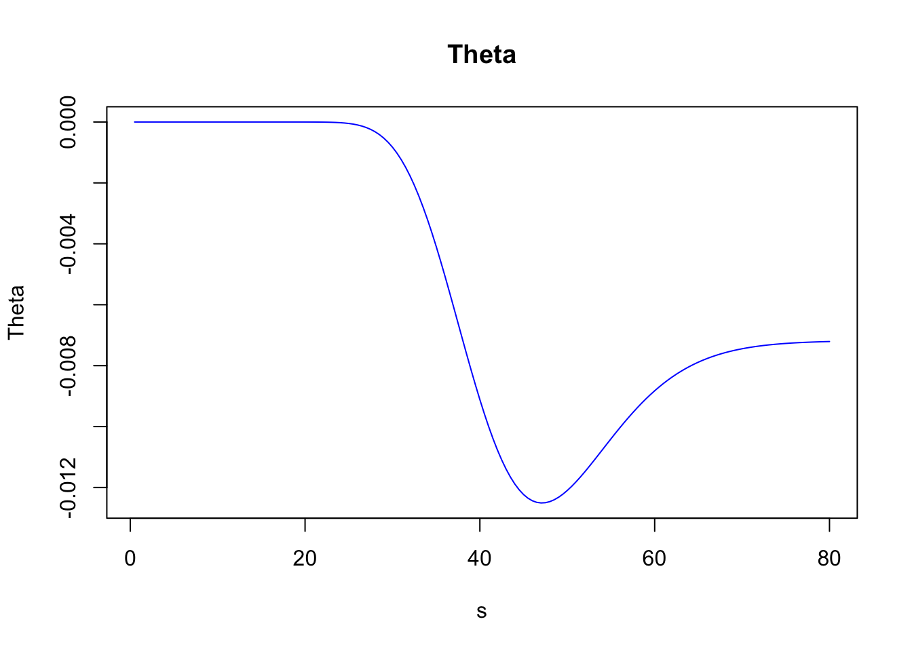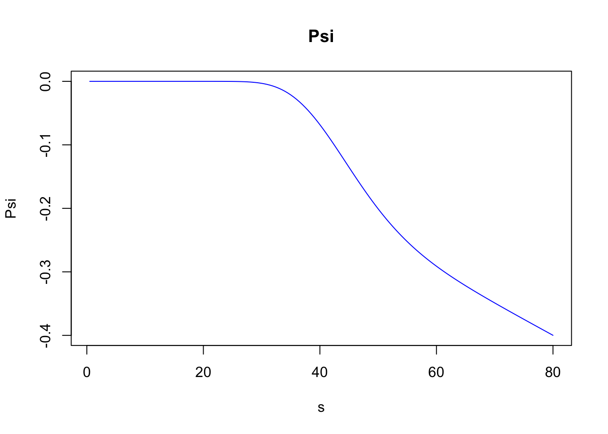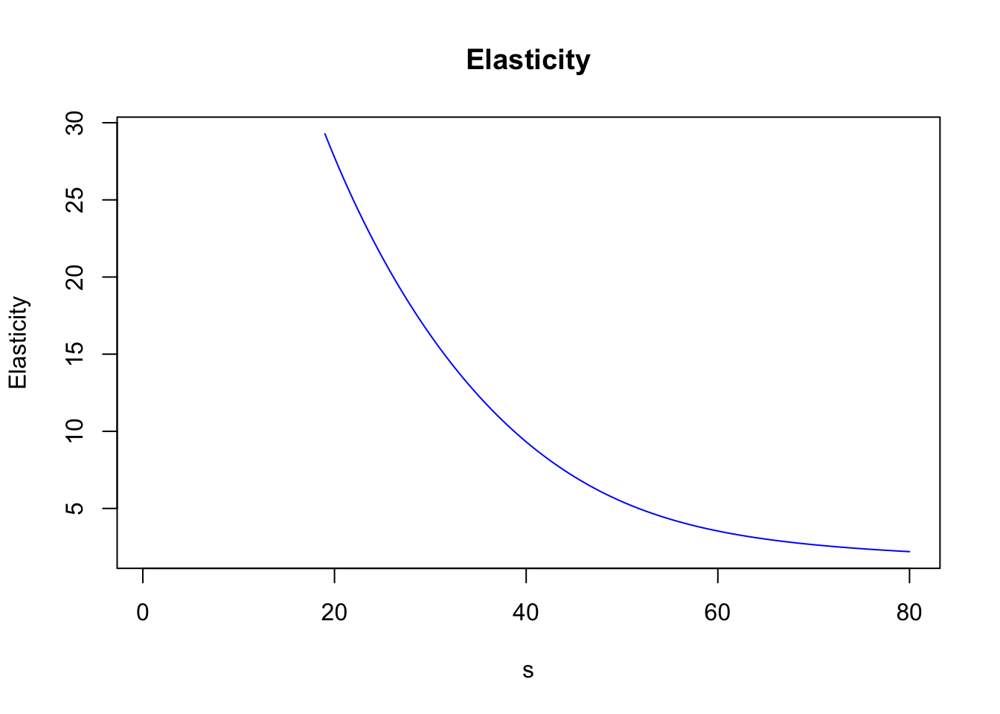